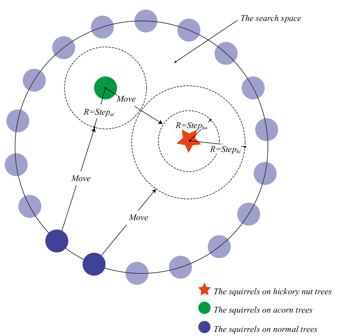
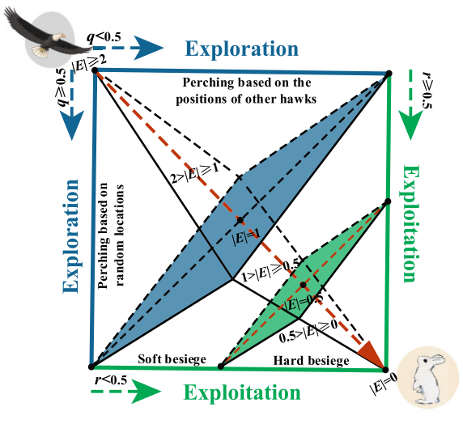
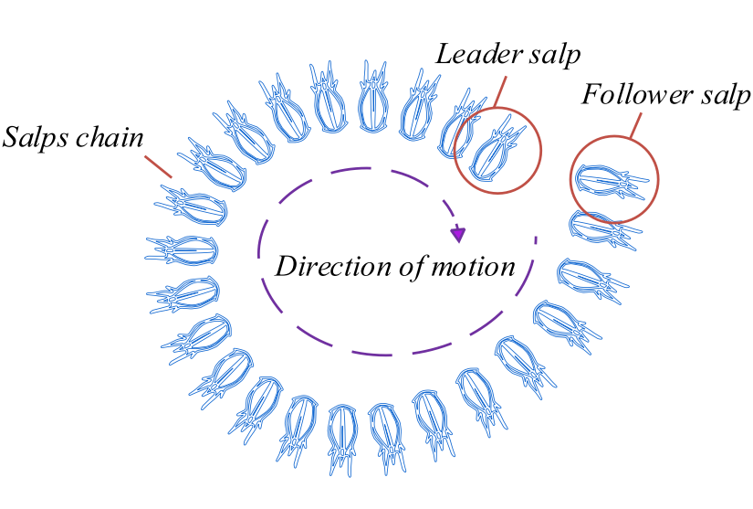

To see the world, things dangerous to come to, to see behind walls, to draw closer, to find each other and to feel.
That is the purpose of Life. --James Thurber, The Secret Life of Walter Mitty
Research
|

|
An improved squirrel search algorithm with reproductive behavior
Xuncai Zhang, Kai Zhao, Lingfei Wang, Yanfeng Wang, Ying Niu
IEEE Access, 2020
We proposed an improved SSA with reproductive behavior to solve the numerical optimization problem.
|
|

|
Improved Harris hawks optimization based on adaptive cooperative foraging and dispersed foraging strategies
Xuncai Zhang, Kai Zhao, Ying Niu
IEEE Access, 2020
We study a challenging problem, namely the balance between exploration and exploitation.
|
|

|
A salp swarm algorithm based on Harris Eagle foraging strategy
Xuncai Zhang, Shida Wang, Kai Zhao, Yanfeng Wang
Mathematics and Computers in Simulation, 2023
We use multipoint crossover to deal with the local optimum.
|
Competition & Resource
|
- 12/2021: "Huawei Cup" The 18th China Post-Graduate Mathmatical Contest in modeling, National Second Prize
- 12/2022: "Huawei Cup" The 19th China Post-Graduate Mathmatical Contest in modeling, National First Prize
- 10/2022: First Prize in Cybersecurity Base Excellence Scholarship
- Intro Resource: Link
|
Misc
Reading Note
08/2023 事实上，当哲学家对“杀人”和“任人死去“的区别感兴趣时，他们常常将自己置于代理人的视角。 -- 《伦理学反教材》
07/2023 愿为江水，与君重逢。 -- 《命运 文在寅自传》
06/2023 想知道人生如何得到幸福，首先研究怎么样才能变得痛苦；想知道企业如何能够做强做大，先了解企业怎么才能走向衰败；想知道如何在股市投资成功，先了解怎样会导致亏损。躲开越多导致失败的因素，获取成功的概率就越大。能躲开所有导致
失败的因素，想不成功那纯属做梦。 -- 《巴芒演义》
05/2023 “如果没有我，巴黎时装周就没什么看头。我山本耀司本人就要做‘反耀司’风格。”就像这样，我一直不断给自己施压。 -- 《做衣服》
04/2023 只是将卫生纸中间的芯改成四角形，就发生了如此巨大的变化。我之所以强调这个提案的意义，并不是要将世界上的卷筒卫生纸都改成四角形，而是希望大家能够注意到“四角形卷筒卫生纸”所代表的“批判性”。单单从生活的立场来看，设计也具有一种批判性。
设计的这种属性由来已久。若我们去追溯设计概念的缘起、设计行为的发生，就会发生设计本身就具有批判性。如果大家能够从圆形卷筒的卫生纸与四角形卷筒的卫生纸之间的差异中感受到这种批判性的存在，是我和设计师共同的荣幸。 -- 《设计中的设计》
03/2023 为那一天而活的意义在于，没办法为那一天而活。好，我要出发。时间已到。 -- 《山本耀司：我投下一枚炸弹》
|
Total visits:
|